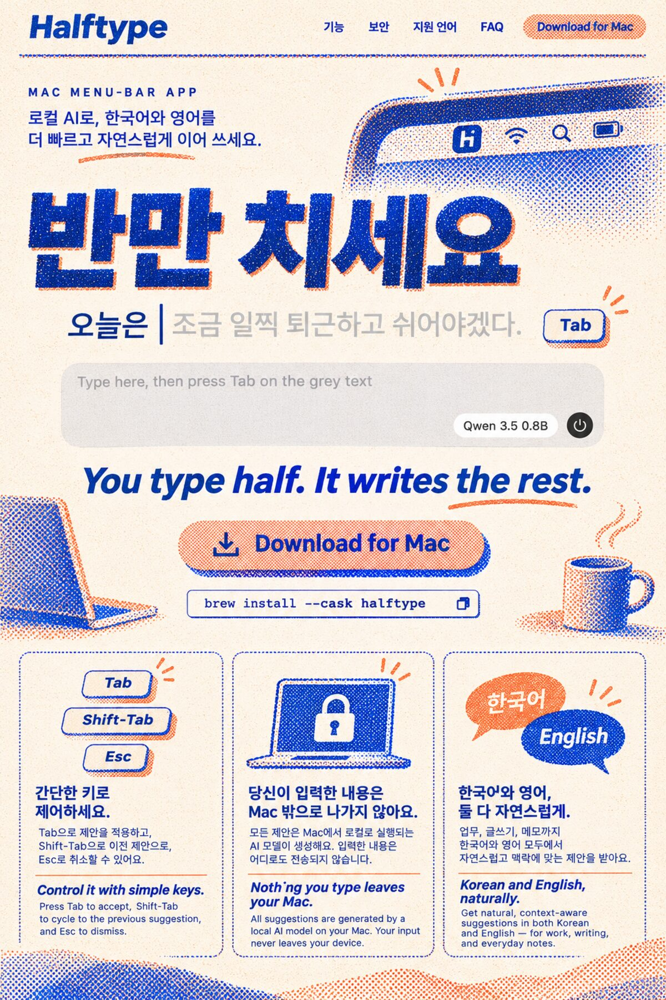
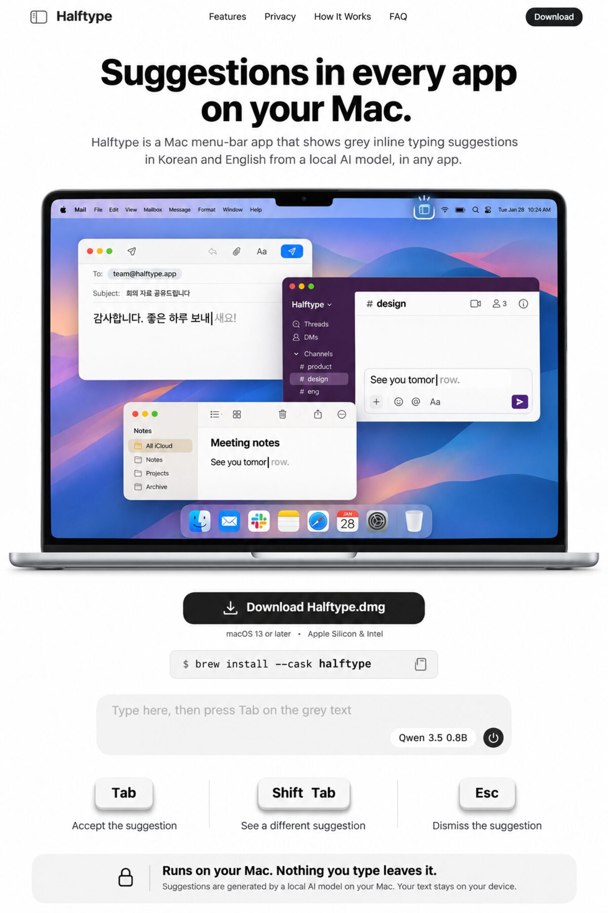

Halftype: two landing-page directions
Which direction for Halftype's first landing page? John: "why don't you try making a landing page or two for our app (it's called halftype now)". Both live pages replay the six real suggestions from the README GIFs, Korean typed key by key the way 2-set builds it. Each was built with TasteSkill's design-taste-frontend and its checker.
Live pages (they play; scroll inside, or open full page)
Light, calm. The hero is a large copy of the Halftype window with the live replay. Behind it is a canvas copy of Sky.metal: blue dots from the top, a peach horizon, a warm swell on each Tab. The same sky comes back at night in the close. Sections: keys, Korean mid-syllable (the real ㅅㅡㅂㄴㅣㄷㅏ. keys Tab presses), privacy, cost, limits, a Korean summary.
Checker: 3 small open issues (key-card heading wording, one row flush at 390 px, sub-line contrast over the night sky at 390 px).
Dark, type-led. "You type half." sits in ink and "It writes the rest." waits as grey ghost text, then a Tab keycap presses and it turns to ink. The Korean line "반만 치면, 나머지는 Halftype이 씁니다." follows the same way. The replay, keys and a 하 → 한 / 함 diagram come next, then privacy as a stark type statement and the numbers with how each was measured.
Checker: 2 small open issues (the kit's button colour fades in on scroll; the closing Questions section is text only). On phones the brew box is hidden.
Image ideas (Codex image tool, not built; prompts in ideas/)

Worth taking: Korean leads ("반만 치세요" set huge), with two spot inks in halftone dots, which are the app's own blue and peach. The copy is the image model's, and some of it is wrong: Shift-Tab doesn't pick the previous suggestion.

Worth taking: "in every app" shown literally, with several windows each holding a ghost. It needs a real screen recording to be honest, which takes your keyboard. "macOS 13, Intel" is wrong (it needs macOS 26 on Apple Silicon).